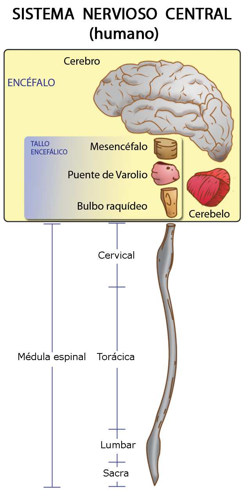
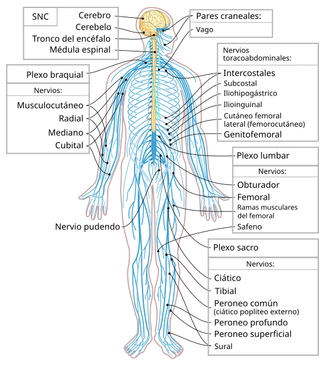
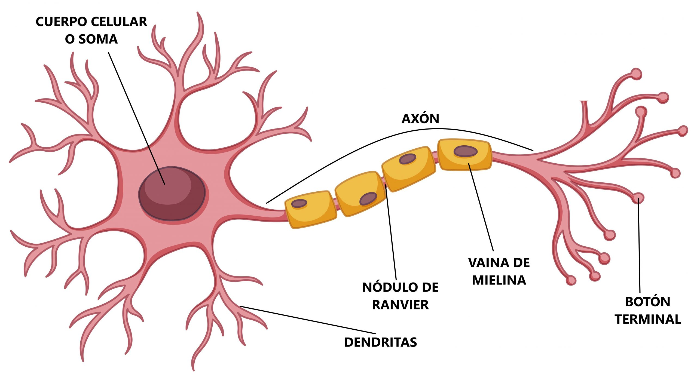

La neuroanatomía estudia la organización y estructura del sistema nervioso. Este sistema es responsable de recibir estímulos, procesar información y generar respuestas coordinadas.
1. Sistema Nervioso Central (SNC)
Es la parte del sistema nervioso protegida por estructuras óseas (cráneo y columna vertebral). Se encarga de la integración de información.
Las Meninges: El Escudo Protector
El SNC no toca directamente el hueso. Está envuelto en tres capas de tejido conectivo llamadas meninges:
Duramadre:
La más externa y resistente.
Aracnoides:
Una capa intermedia con aspecto de tela de araña.
Piamadre:
La capa más fina y delicada que está en contacto directo con el tejido nervioso.
Entre la aracnoides y la piamadre fluye el Líquido Cefalorraquídeo (LCR), que amortigua golpes y nutre al cerebro.
Encéfalo
Incluye el Cerebro (funciones superiores), el Cerebelo (equilibrio y coordinación) y el Tronco Encefálico (funciones vitales automáticas como respirar).
Médula Espinal
El cordón nervioso que comunica el encéfalo con el resto del cuerpo y gestiona los arcos reflejos rápidos.

2. Sistema Nervioso Periférico (SNP)
Está compuesto por los nervios que salen del SNC hacia los órganos y extremidades. Se divide funcionalmente en:
- Somático: Controla los movimientos voluntarios de los músculos esqueléticos.
- Autónomo: Controla funciones involuntarias (corazón, digestión). Se divide en Simpático (alerta/lucha) y Parasimpático (reposo/digestión).

3. La Unidad Funcional: La Neurona
Célula especializada en la transmisión de impulsos electroquímicos.
Sustancia Gris vs. Sustancia Blanca
Si cortamos el cerebro o la médula, veremos dos colores distintos:
Sustancia Gris:
Formada principalmente por los cuerpos de las neuronas (donde se procesa la información). En el cerebro está por fuera; en la médula, por dentro.
Sustancia Blanca:
Formada por los axones cubiertos de mielina (las "vías de comunicación"). Su color blanco se debe a la grasa de la mielina. Sus partes principales son:
- Soma: El cuerpo celular donde reside el núcleo.
- Dendritas: Prolongaciones cortas que reciben señales.
- Axón: Prolongación larga que envía la señal hacia otra célula, a menudo recubierta de mielina para aumentar la velocidad.

Los Pares Craneales
Existen 12 pares de nervios que nacen directamente del encéfalo y controlan funciones críticas como la visión (Óptico), el olfato (Olfatorio) y el movimiento del corazón y vísceras (Vago).
Regresar al temario principal